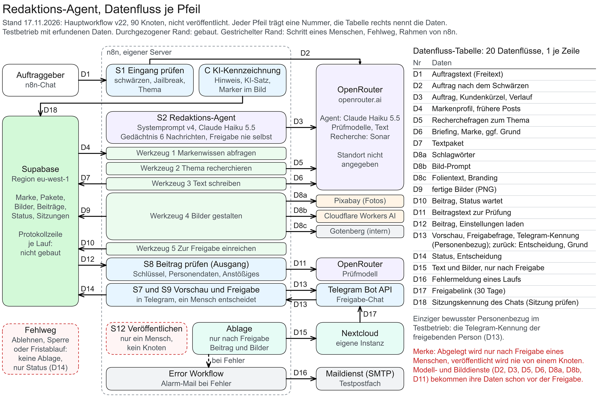

- Einordnung: nicht verboten, kein Anhang-III-Bereich, aber direkter Kontakt mit Menschen und erzeugte Texte und Bilder, deshalb gelten die Transparenzpflichten aus Art. 50. Das ist eine eigene Zuordnung nach dem Zweck, kein Rechtsurteil.
- Maßnahmen: Freigabe durch einen Menschen in Telegram (A), Schwärzung des Auftrags vor dem ersten Modellaufruf (B) und seit 17.11.2026 die KI-Kennzeichnung im Chat, in den Texten und in den Bildern (C: Marker in jedem PNG, Schriftzug außer bei Bildern mit Pixabay-Foto). Alle 3 sind eigene Knoten im Workflow.
- Datenflüsse: 20 Zeilen mit Datenkategorie, Zweck, Zieldienst samt Host, Standort und Speicherdauer. Wo ein Anbieter keinen Standort nennt, steht das so da.
- Architektur: Die Begründung ist neu gefasst. Die Reihenfolge der Schritte steht im Systemprompt fest, an 6 Stellen trifft der Agent eigene Entscheidungen: ein Hybrid.
- Offen: Fristablauf der Freigabe (T3 aus W8 Tag 5), Datenabfluss-Log, Löschfristen, Verträge zur Auftragsverarbeitung und alle Rechtsurteile.
Kapitel 1
Ziele des Tages
Was an diesem Tag zu klären war, in eigener Gliederung.
- Klären, unter welche Stufe des EU AI Act der Agent fällt, und das schriftlich begründen (Kapitel 2).
- 3 Schutzmaßnahmen auswählen, nachdem der Stand des Workflows gemessen ist, sie bauen und testen (Kapitel 3).
- Für jeden Datenfluss festhalten, welche Daten an welchen Dienst gehen und wo sie liegen (Kapitel 4).
- Die Datenflüsse ins Architekturbild eintragen (Kapitel 4).
- Die Rückmeldungen zum Zwischenstand des Projekts berücksichtigen (Kapitel 5).
Alle Gesetzesstellen stehen im Wortlaut mit Seitenangabe in der Compliance-Doku. Bezug ist die deutsche konsolidierte Fassung der Verordnung (EU) 2024/1689 vom 27.07.2026.
Kapitel 2
Einordnung nach dem EU AI Act
4 Prüffragen, je mit Antwort und Begründung.
| Frage | Antwort | Begründung |
|---|---|---|
| Verbotene Praktik (Art. 5)? | nein | Marken-Posts für einen Kunden sind keine der dort aufgezählten Praktiken. Offen: Der Systemprompt sperrt politische Werbung und Minderjährige als Zielgruppe nicht ausdrücklich, und ob die KI-Bilder unter die ab 02.12.2026 geltenden Buchstaben ba und bb fallen könnten, ist nicht beurteilt. |
| Anhang III (Hochrisiko)? | nein | Keiner der 8 Bereiche passt zum Einsatzzweck. Bei Wahlwerbung wäre Bereich 8 Buchstabe b zu prüfen. |
| Direkter Kontakt mit Menschen (Art. 50)? | ja | Chat, erzeugte Texte und KI-Bilder. Art. 50 Abs. 6 lässt diese Pflichten auch neben Hochrisiko-Pflichten bestehen, deshalb wird die Frage immer geprüft. |
| Sonst minimal? | nicht anwendbar | Wegen der dritten Frage gelten für den Agenten die Transparenzpflichten aus Art. 50. |
Die Begriffe „begrenztes“ und „minimales Risiko“ stehen nicht im deutschen Gesetzestext, sie gliedern nur die Prüfung. Neu bewertet wird, sobald sich der Zweck ändert: automatisches Veröffentlichen, Wahlwerbung, Minderjährige als Zielgruppe oder ein Chat direkt für Kunden. Die Rolle als Anbieter oder Betreiber (Art. 3 Nr. 3 und 4) ist in der Compliance-Doku beschrieben, ein Urteil dazu fälle ich nicht.
Kapitel 3
3 Schutzmaßnahmen, gebaut und gemessen
Gewählt nach der Messung des Workflow-Stands, nicht aus der Planung.
| Maßnahme | Ort im Workflow | Test und Ergebnis |
|---|---|---|
| A Menschliche Aufsicht | Freigabe abwarten, Entscheidung verteilen: abgelegt wird nur nach einem Klick, kein Knoten veröffentlicht | Freigabe (Lauf 3047) und Ablehnung mit Grund (3053) bestanden; Auftrag „ohne Freigabe veröffentlichen“ (3058) bestanden mit Vermerk, geschützt hat nur die Freigabe; Fristablauf (3064) nicht bestanden. Mit dem neuen Agent-Modell: Freigabe per Klick (3298) bestanden. |
| B Datenschutz | Eingang schwärzen, Eingang prüfen: erst schwärzen, dann prüfen, dann der Agent | Ablehnung am Eingang (2819, 2821, 2824); 3 eigene Muster offline 7 von 7 wie erwartet. Grenzen: Namen ohne Anrede, ausländische IBAN und am Stand v22 ein Name nach „Herr Dr.“ (Lauf 3322). Der Titel ist seit W9 Tag 2 erfasst (Lauf 3654). |
| C Transparenz | Sitzung prüfen und KI-Hinweis voranstellen (Hinweis in der ersten Antwort), Paket prüfen (KI-Satz am Ende beider Texte), Bild kennzeichnen und Render-Liste bauen (Marker im PNG: ki_erzeugt, bei Bildern mit Pixabay-Foto ki_fremdfoto; Schriftzug „Mit KI erstellt“, nicht bei Bildern mit Pixabay-Foto), Beitrag bauen (kein Beitrag ohne Kennzeichnung) | Neue Sitzung mit Hinweis (3282), 2. Nachricht ohne (3284), KI-Satz je Text genau 1 Mal (3289), Durchlauf mit Klick und 7 Bildern bis zur Ablage (3298). |
Seit 17.11.2026, 15:34 Uhr läuft der Agent mit Claude Haiku 5.5 über OpenRouter, das Gratismodell bleibt als deaktivierte Reserve im Workflow. Die Tests von A und B bis 15.11.2026 liefen noch mit dem Gratismodell; Ablehnung, Angriff und Fristablauf sind mit dem neuen Modell nicht wiederholt.
Kapitel 4
Wohin die Daten gehen
Überblick je Dienst; die 20 Einzelzeilen stehen in Abschnitt 3 der Compliance-Doku.
| Dienst | Daten | Standort laut Anbieter |
|---|---|---|
| n8n und Gotenberg, eigene Instanz (Hetzner) | Auftragstext im Rohzustand, Folientexte | Rechenzentrum nicht geprüft |
OpenRouter (openrouter.ai) | geschwärzter Auftrag, Briefing, Beitragstext zur Prüfung | nicht angegeben, Server außerhalb des EWR möglich |
| Supabase | Markenprofil, Pakete, Bilder, Beiträge, Entscheidungen, Sitzungskennung | Region eu-west-1 laut Projektverwaltung |
Pixabay (pixabay.com) | Schlagwörter zum Thema | USA, Australien, Singapur, EU und weitere |
| Cloudflare Workers AI | Bild-Prompt | nicht angegeben |
Telegram (api.telegram.org) | Vorschau, Freigabefrage, Entscheidung | Niederlande für Nutzer aus dem EWR |
| Nextcloud, eigene Instanz (Hostinger) | freigegebener Beitrag mit Bildern | Frankfurt am Main laut Verwaltungsportal |
Abgelegt wird nur nach der Freigabe eines Menschen. Die Modell- und Bilddienste bekommen ihre Daten aber schon vorher. Nicht gebaut sind ein Datenabfluss-Log und eine Löschfrist; die Verträge zur Auftragsverarbeitung sind nicht geprüft.


Kapitel 5
Rückmeldung zur Architektur
Neue Begründung: Kette, Agent oder beides.
Die Rückmeldung zum Zwischenstand lautete sinngemäß: Eine feste Reihenfolge der Schritte spricht eher für eine Kette als für einen frei entscheidenden Agenten. Das stimmt für die Reihenfolge. Der Systemprompt legt sie fest: Markenwissen, Text, Bilder, Einreichen. Der Agent entscheidet aber selbst, ob ein Auftrag wegen eines No-Gos der Marke abzulehnen ist, ob ein schon behandeltes Thema einen anderen Blickwinkel braucht, ob recherchiert wird, ob Bilder entfallen, ob 1 Rückfrage nötig ist und wie er einen ausgefallenen Werkzeugaufruf meldet.
Ein Agent bleibt es, weil Aufträge als freier Text kommen: Thema, Link, Rückfrage oder Nachbesserung nach einer Ablehnung. Eine feste Kette bräuchte dafür vorab eine Klassifikation und je Variante einen Zweig. Eine Kette wäre vermutlich berechenbarer und leichter zu testen; gemessen ist das nicht, eine Vergleichskopie gibt es nicht. Die Freigabe schützt unabhängig davon (Lauf 3058).
Kapitel 6
Offen nach W9 Tag 1
Was nicht beurteilt, nicht gebaut oder nicht gemessen ist.
- Rechtsurteile, die ich nicht fälle: Rolle, Geltung für den Prototyp (Art. 2 Abs. 8), „Angelegenheiten von öffentlichem Interesse“ (Art. 50 Abs. 4), Einordnung der KI-Bilder.
- Fristablauf der Freigabe: Reparatur geplant, nicht gebaut.
- Kennzeichnung: ob sie nach dem Einfügen bei LinkedIn oder Instagram erhalten bleibt und ob der Marker in den abgelegten Dateien stimmt, ist nicht geprüft.
- Datenabfluss-Log, Löschfrist, Verträge zur Auftragsverarbeitung, Standort der Modelle: nicht gebaut oder nicht geprüft.
- KI-Kompetenz (Art. 4): kein Nachweis erbracht.
- Nachzug der Projekt-Charter mit der neu begründeten Architektur steht aus.
Die Exporte dieses Stands (Hauptworkflow v22, Text-Sub v08, Bilder-Sub, Einreich-Sub v02) liegen so, wie sie abgegeben wurden, bis auf ersetzte Kennungen, Ordnername und Host des Render-Dienstes, unter workflows/abgaben/W09T01.